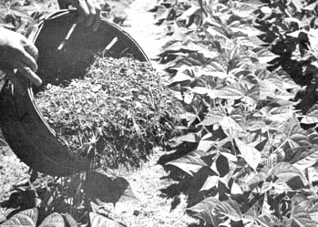

Snap beans double their yield if aisles between rows are heavily mulched when plants are 12 inches tall. Green grass clippings are excellent here. No need to dry the clippings if they're not applied too thickly.